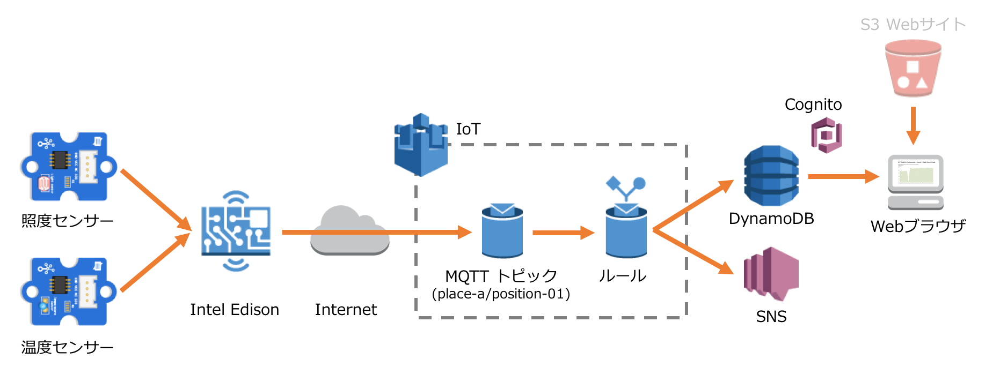
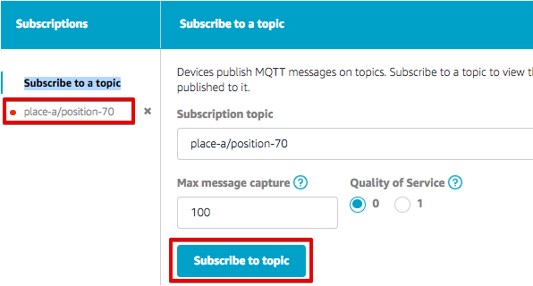
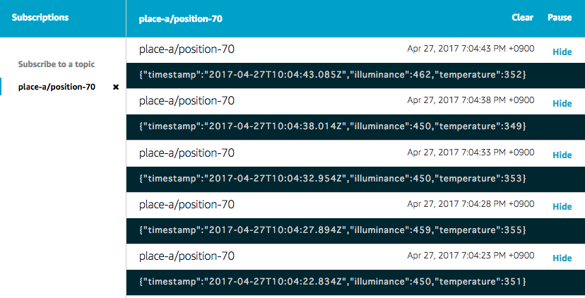

5. シナリオ1: センサーデータの送信¶
ntel Edisonに接続された照度センサーと温度センサーのデータをEdison上のプログラムで定期的にAWS IoTに送信します。AWS IoTではルールに基づきDynamoDBへ保存します。また、AWS IoTはルールに基づき、しきい値を下回った場合はSNSを使ってE-mailでアラートを送信します。WebサイトはS3で別途用意済みで、Webブラウザで開きDynamoDBに保存されたデータを確認できます。
送信するセンサーデータは以下のJSONフォーマットとします。
{
"timestamp": "2015-10-24T14:16:37.305Z", ← ISO8601形式
"illuminance": "300" ← 照度センサーのアナログ値
"temperature": "200" ← 温度センサーのアナログ値
}
使用するDynamoDBのテーブルやメール通知の設定は「2. AWS環境の準備」で作成したCloud Formationのスタックに含まれています。
5.1. DynamoDB保存のAWS IoT ルールを作成¶
マネージメントコンソールのサービス一覧から[AWS IoT]をクリックして開きます。

DynamoDBに保存するルールを作成します。メニューから[Rules]を選択します。以下の様な画面が表示された場合は、[Create a rule]をクリックします。

あるいは、ルールの一覧が表示された場合は[Create]をクリックします。

以下の項目について値を入力します。[Add action]をクリックします。
| 設定項目 | 値 |
|---|---|
| Name | SaveToDynamoDB_<参加者番号> |
| Attribute | |
| Topic Filter | place-a/position-<参加者番号> |

[Insert a message into a DynamoDB table]を選択し、[Configure action]をクリックします。

以下の項目について値を入力します。[Role name]はリストから選択します。入力後[Add action]をクリックします。

[Insert a message into a DynamoDB table]が追加されたことを確認し、[Create rule]をクリックします。

作成されたルールの情報が表示されます。[←]をクリックします。

ルール一覧が表示され、作成したルールが表示されている事を確認します。

5.2. メール通知のAWS IoT ルールを作成¶
ルールの一覧が表示された画面で、[Create]をクリックします。
以下の項目について値を入力します。[Add action]をクリックします。
| 項目 | 値 |
|---|---|
| Name | NotifyToAdmin_<参加者番号> |
| Attribute | *, topic(1) AS place, topic(2) AS position |
| Topic Filter | place-a/position-<参加者番号> |
| Condition | illuminance < 30 |

[Send a message as an SNS push notification]を選択し、[Configure action]をクリックします。

以下の項目について値を入力します。[Role name]はリストから選択します。入力後[Add action]をクリックします。
| 項目 | 値 |
|---|---|
| SNS target | AWSIoTHandsonStack-<参加者番号>-NotifyToAdminTopic-<英数字> (リストから選択) |
| IAM Role name | AWSIoTHandsonStack-<参加者番号>-NotifyToSNSRole-<英数字> (リストから選択) |

[SNS Action]が追加されたことを確認し、[Create rule]をクリックします。

作成されたルールの情報が表示されます。[←]をクリックします。

ルール一覧が表示され、作成したルールが表示されている事を確認します。

CloudFormationでStack作成時にメール通知の宛先確認メールが届いているため、メール内の確認リンク[Confirm subscription]をクリックします。

5.3. プログラムの実行¶
本ハンズオン用に用意されているzipファイルを解凍したaws-iot-handson-dojo-basicの配下scenario1にシナリオ1用のNode.jsプログラムがあります。プログラムを実行します。5秒ごとにメッセージが送られ続けます。このシナリオ終了時までそのまま動かし続けます。ハンズオン終了時にプログラムを終了させる場合はCtrl+Cを押します。
# cd ~/aws-iot-handson-dojo-basic/scenario1/
# node main.js
Connected to Message Broker
Publishing: {"timestamp":"2016-04-06T07:05:08.973Z","illuminance":343,"temperature":510}
Publishing: {"timestamp":"2016-04-06T07:05:14.035Z","illuminance":343,"temperature":512}
Publishing: {"timestamp":"2016-04-06T07:05:19.084Z","illuminance":343,"temperature":512}
5.4. データの受信を確認する¶
AWS IoTのTestにて、”Subscription topic”に “place-a/position-<任意の番号>” を入力し、[Subscribe to topic]をクリックすれば、左側の”Subscribe to a topic”欄に、”place-a/position-<任意の番号>”が、表示されます。 トピックが受信できていれば、”place-a/position-<任意の番号>”の左側に赤字で ● が表示されます。
“place-a/position-<任意の番号>”をクリックすると、デバイスから送信されているセンサーデータがリアルタイムで表示されます。
5.5. DynamoDBに保存されたデータの確認¶
AWSマネージメントコンソールのサービス一覧から[DynamoDB]をクリックして開きます。左側のメニューから[テーブル]をクリックし、テーブル一覧から”AWSIoTHandsonStack-<参加者番号>-SensorDataTable-<英数字>”をクリックします。タブの[項目]を選択すると、テーブル内のデータが表示されます。

DynamoDBに保存されたデータをS3に保存されているWebサイトでも確認する事ができます。Webブラウザに読み込まれたJavaScriptはWebブラウザ上で動作して、CognitoでAWSにアクセスするための一時クレデンシャルを取得し、DynamoDBに直接アクセスしてデータを取得しグラフ表示します。
以下のURLをブラウザで開きます。
[Cognito Identity Pool ID]に「2.2. Cognito Identityを手動作成」で作成したCognito Identityの[Identity Pool ID]を入力し、[Cognito Unauth Login]をクリックします。JavaScriptがバックグラウンドで定期的にDynamoDBにアクセスして新しいセンサー情報が得られればグラフは自動更新されます。

5.6. メール通知の確認¶
照度センサーを手で覆い、30以下の照度になることをLCDで待ちます。その後、通知メールが届いている事を確認します。